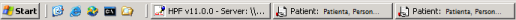

To keep a viewer window always in the foreground, in the viewer window select Always On Top from the Window menu.
If Always On Top is not active for the current window, you can bring other windows forward by clicking in the window of your choice.
When two viewer windows are open and Always On Top is active for both windows, you can bring either window forward by clicking on its viewer button in the task bar at the bottom of the desktop.

When two viewer windows are open and Always On Top is active for only one viewer window, you cannot bring forward the window for which Always On Top is turned off.